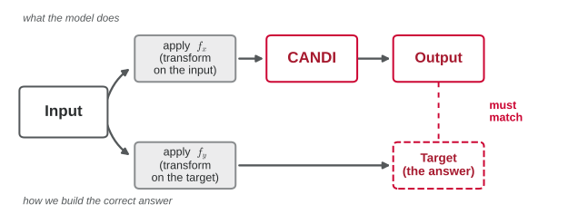
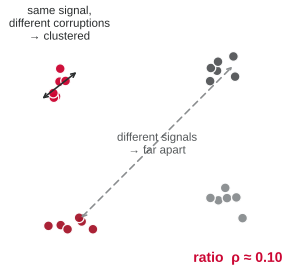
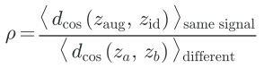
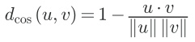
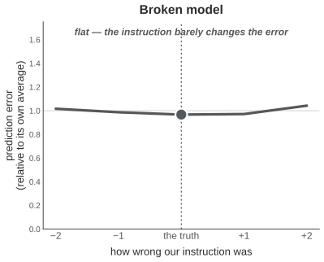
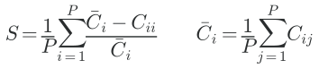
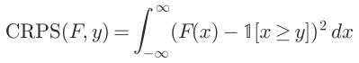
Same model: it understands the input, but the output knob does nothing. This looked exactly like collapse.
the decoder averages every assay’s instruction into one blur.
the model peeks at the input instead of reading the instruction.
maybe steering needs the depth-anchor machinery.
the signal hides in sparse peaks, drowned by empty genome.
The broken version mixed all the assays’ instructions into a single average before the decoder used it. Any one assay’s instruction got smeared out and lost.
Keep each assay’s instruction separate — and the knob comes alive.
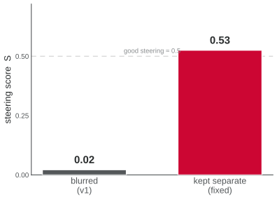
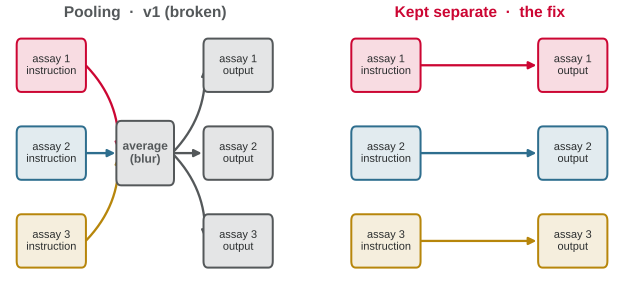
Pooling (v1): the decoder averaged every assay’s instruction into one blur, then fed that same blur to every assay — so assay 1’s own instruction was gone.
The fix: route each assay’s instruction straight to its own output. Nothing is averaged — every assay is steered by its own metadata.
The failure wasn’t a wall — it was one fixable wiring mistake.
Keep each assay’s instruction separate, and the model follows two independent commands at once: clean the input and reshape the output on demand — by genuinely reading the instruction, not cheating.
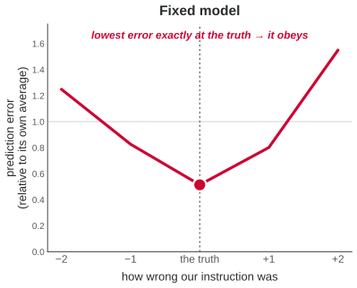
Asking the model to add a distortion to its output is basically free. The real work is cleaning up a distortion on the way in.
And the surprise: the distortion that trips it up isn’t the information-destroying ones (blurring, capping) — the model handles those fine. It’s a plain shift in the background level.
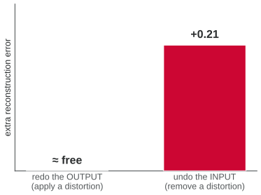
We hid some input→output pairings from training entirely — then asked for them anyway.
The model still gets them right: it reads the instruction and composes, rather than memorising pairs. Hiding almost half of the combinations barely changes anything.
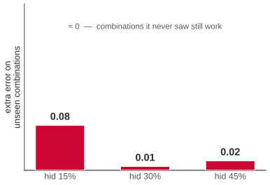